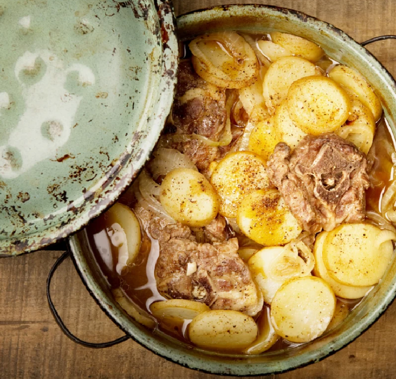

Irish Stew

Description
Nothing is more warming and filling than a delicious bowl of Irish
stew, a popular dish from Ireland and loved the world over. It was
traditionally made with mutton, but it is now often made with the
easier-to-find lamb. Either meat will make a delicious, hearty stew.
Ingredients
- 1 kg lamb chops
- 3 large onions
- 1 kg potatoes peeled and sliced
- 3 tablespoons Worcestershire sauce
Steps
- Preheat oven to 160°C.
- Arrange a layer of chops in a large casserole dish.
- Season with cracked pepper.
- Cover with a layer of onions and then potatoes.
- Repeat until all is used.
- Sprinkle the Worcestershire over the top, then pour in enough water to come twothirds up the dish.
- Cover and bake for 2 hours.
- Remove the lid, and bake for 30 minutes more or until the chops are nice and tender.